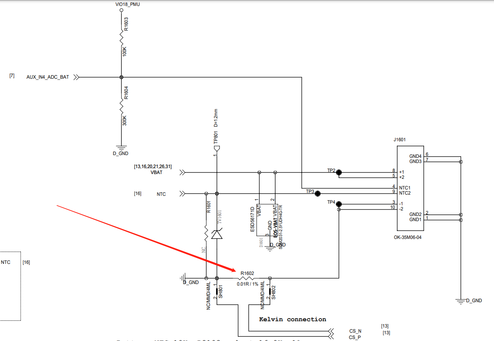
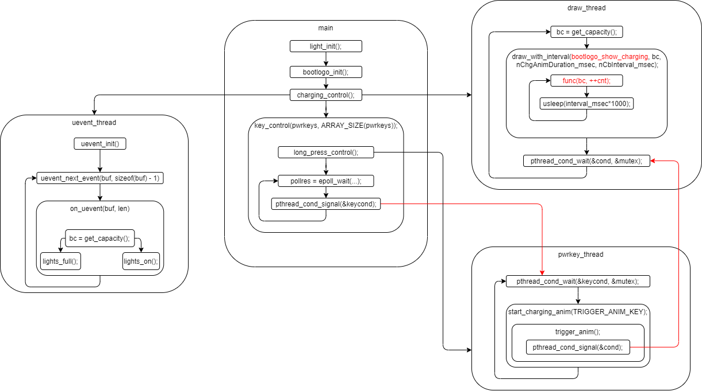

Android Battery Animation
关机充电动画怎么工作的，如何获取电量信息，无mobile log，只能看uart port
Charger Block
如下是实际Rsense实际连接图，CS_N/CS_P就是ISENSE/BATSNS，其会连进Gauge中。NTC连接热敏电阻，从而可以测量电池温度。

charger模式进程情况
如下是procrank输出情况，ps -A输出了内核线程，太多了，procrank只输出用户进程情况，貌似有时候无效
PID Vss Rss Pss Uss cmdline 389 57280K 20396K 19341K 18488K /system/bin/kpoc_charger 1 88064K 10716K 6004K 4632K /system/bin/init 363 39520K 7828K 3245K 1960K /system/bin/init 365 39008K 7740K 3240K 2012K /system/bin/ueventd 378 2136056K 6044K 2878K 2496K /system/bin/hwservicemanager 364 39008K 6968K 2565K 1372K /system/bin/init 405 38056K 5796K 2469K 1580K /vendor/bin/hw/android.hardware.light@2.0-service-mediatek-lazy 401 37588K 5340K 2018K 1136K /vendor/bin/hw/android.hardware.health@2.0-service 387 9552K 2960K 1949K 1100K /system/vendor/bin/volte_md_status 376 141924K 4932K 1937K 1492K /system/bin/logd 379 36312K 4132K 1425K 1048K /vendor/bin/vndservicemanager 407 52372K 3976K 1289K 736K /system/bin/traced 408 52372K 3864K 1202K 656K /system/bin/traced_probes 377 35664K 3936K 1113K 796K /system/bin/servicemanager 409 34700K 3744K 999K 616K /vendor/bin/stp_dump3 425 52032K 3296K 969K 756K procrank 402 33596K 3264K 936K 588K /system/bin/sh 417 33596K 3264K 926K 580K /system/bin/sh ------ ------ ------ 54513K 42044K TOTAL RAM: 1892880K total, 1754584K free, 1816K buffers, 36376K cached, 1656K shmem, 42392K slab
ps -ef | awk ‘$3!= “2” {print $0}’
UID PID PPID C STIME TTY TIME CMD root 1 0 1 00:00:07 ? 00:00:03 init second_stage root 2 0 0 00:00:07 ? 00:00:00 [kthreadd] root 362 1 0 00:00:12 ? 00:00:00 init subcontext u:r:vendor_init:s0 12 root 363 1 0 00:00:12 ? 00:00:00 init subcontext u:r:vendor_init:s0 13 root 364 1 0 00:00:13 ? 00:00:01 ueventd logd 375 1 0 00:00:14 ? 00:00:00 logd system 376 1 0 00:00:14 ? 00:00:00 servicemanager system 377 1 0 00:00:14 ? 00:00:00 hwservicemanager system 378 1 0 00:00:14 ? 00:00:00 vndservicemanager /dev/vndbinder root 386 1 0 00:00:14 ? 00:00:00 volte_md_status root 388 1 1 00:00:14 ? 00:00:03 kpoc_charger system 399 1 0 00:00:14 ? 00:00:00 android.hardware.health@2.0-service shell 401 1 0 00:00:14 4:64 00:00:00 sh nobody 404 1 0 00:00:14 ? 00:00:00 traced nobody 405 1 0 00:00:14 ? 00:00:00 traced_probes system 406 1 0 00:00:14 ? 00:00:00 stp_dump3 system 409 1 0 00:00:15 ? 00:00:00 android.hardware.light@2.0-service-mediatek-lazy shell 441 401 5 00:07:47 4:64 00:00:00 ps -ef shell 442 401 0 00:07:47 4:64 00:00:00 awk $3!= "2" {print $0}ps -A | grep healthd
暂时不知道为什么没有这个进程
可能是这个overrides导致的
// system/core/healthd/Android.bp cc_library_static { name: "libbatterymonitor", srcs: ["BatteryMonitor.cpp"], cflags: ["-Wall", "-Werror"], vendor_available: true, recovery_available: true, export_include_dirs: ["include"], shared_libs: [ "libutils", "libbase", ], header_libs: ["libhealthd_headers"], export_header_lib_headers: ["libhealthd_headers"], } // ...省略 cc_binary { name: "android.hardware.health@2.0-service", defaults: ["android.hardware.health@2.0-service_defaults"], vendor: true, relative_install_path: "hw", init_rc: ["android.hardware.health@2.0-service.rc"], srcs: [ "HealthServiceDefault.cpp", ], overrides: [ "healthd", ] }
主要进程如下：
ueventd
/system/bin/kpoc_charger
/system/bin/logd
/vendor/bin/hw/android.hardware.health@2.0-service
/vendor/bin/hw/android.hardware.light@2.0-service-mediatek-lazy
如下是charger主函数main使用到health、light对应的service的init，其主要是获取服务的Binder
// vendor/mediatek/proprietary/external/charger/main.cpp
int main(__attribute__((unused))int argc, __attribute__((unused))char *argv[])
{
// ...省略
health_service_init();
light_init();
//stop_backlight();
KPOC_LOGI("stop_backlight 1\n");
// ...省略
}
health hal service
确认一下health service涉及的代码在哪里
vendor/etc/init/android.hardware.health@2.0-service.rc
service health-hal-2-0 /vendor/bin/hw/android.hardware.health@2.0-service class hal user system group system capabilities WAKE_ALARM file /dev/kmsg w
源代码位于system/core/healthd，由上面的进程信息可知，没有跑healthd，只跑了HIDL的service；
system/core/healthd/Android.bp
cc_defaults { name: "android.hardware.health@2.0-service_defaults", cflags: [ "-Wall", "-Werror", ], static_libs: [ "android.hardware.health@2.0-impl", "android.hardware.health@1.0-convert", "libhealthservice", "libhealthstoragedefault", "libbatterymonitor", ], shared_libs: [ "libbase", "libcutils", "libhidlbase", "libhidltransport", "libhwbinder", "liblog", "libutils", "android.hardware.health@2.0", ], } cc_binary { name: "android.hardware.health@2.0-service", defaults: ["android.hardware.health@2.0-service_defaults"], vendor: true, relative_install_path: "hw", init_rc: ["android.hardware.health@2.0-service.rc"], srcs: [ "HealthServiceDefault.cpp", ], overrides: [ "healthd", ] }“libhealthservice”,
hardware/interfaces/health/2.0/utils/libhealthservice
“android.hardware.health@2.0-impl”,
hardware/interfaces/health/2.0/default/Android.bp
“android.hardware.health@1.0-convert”,
hardware/interfaces/health/1.0/default/Android.bp
kpoc_charger health binder
kpoc_charger通过binder通信获取电量，依赖的库如下所示
* vendor/mediatek/proprietary/external/charger
* Android.mk
* LOCAL_STATIC_LIBRARIES := libhealthhalutils
* hardware/interfaces/health/2.0/utils/libhealthhalutils
kpoc_charger绘制电量图
kpoc_charger内部线程工作架构如下

每一帧图绘图由该函数处理：bootlogo_show_charging
// vendor/mediatek/proprietary/external/charger/bootlogo.cpp
/*
* Show charging animation with battery capacity
*
*/
void bootlogo_show_charging(int capacity, int cnt)
{
KPOC_LOGI("[ChargingAnimation: %s %d]%d, %d\n",__FUNCTION__,__LINE__, capacity, cnt);
if (get_battnotify_status())
{
KPOC_LOGI("[ChargingAnimation: %s %d] show_charger_error_logo, get_battnotify_status()= %d \n",__FUNCTION__,__LINE__, get_battnotify_status());
show_charger_ov_logo();
return;
}
if (showLowBattLogo)
{
KPOC_LOGI("[ChargingAnimation: %s %d] show_low_battery , showLowBattLogo = %d \n",__FUNCTION__,__LINE__,showLowBattLogo);
show_low_battery();
return;
}
show_battery_capacity(capacity);
}
Screen Power ON/OFF
blank_mode这个参数的值主要有两个，FB_BLANK_UNBLANK和FB_BLANK_POWERDOWN，
FB_BLANK_UNBLANK是亮屏操作；
FB_BLANK_POWERDOWN 是灭屏操作；
屏上电
// vendor/mediatek/proprietary/external/charger/charging_control.cpp static void draw_with_interval(void (*func)(int, int), int bc, int total_time_msec, int interval_msec) { // ...省略 while(!time_exceed(start, total_time_msec) && !key_trigger_suspend) { // ...省略 if (!resume_started) { resume_started = 1; /* make fb unblank */ snprintf(filename, sizeof(filename), "/dev/graphics/fb0"); fd_fb = open(filename, O_RDWR); if (fd_fb < 0) { KPOC_LOGI("Failed to open fb0 device: %s", strerror(errno)); } err = ioctl(fd_fb, FBIOBLANK, FB_BLANK_UNBLANK); if (err < 0) { KPOC_LOGI("Failed to unblank fb0 device: %s", strerror(errno)); } if (fd_fb >= 0) close(fd_fb); } // ...省略 } }
屏下电
static void* draw_thread_routine(__attribute__((unused))void *arg) { // ...省略 do { // ...省略 snprintf(filename, sizeof(filename), "/dev/graphics/fb0"); fd_fb = open(filename, O_RDWR); if (fd_fb < 0) { KPOC_LOGI("Failed to open fb0 device: %s", strerror(errno)); break; } err = ioctl(fd_fb, FBIOBLANK, FB_BLANK_POWERDOWN); if (err < 0) { KPOC_LOGI("Failed to blank fb0 device: %s", strerror(errno)); } if (fd_fb >= 0) close(fd_fb); // ...省略 } while(1); // ...省略 }
获取电量
获取电量函数调用流程
* vendor/mediatek/proprietary/external/charger/charging_control.cpp * bc = get_capacity(); * ret = get_health_capacity(&bat_level); * auto ret = g_health->getCapacity(...) * hardware/interfaces/health/2.0/default/Health.cpp * Return<void> Health::getCapacity(getCapacity_cb _hidl_cb) * getProperty<int32_t>(battery_monitor_, BATTERY_PROP_CAPACITY, 0, _hidl_cb); * status_t err = monitor->getProperty(static_cast<int>(id), &prop); * system/core/healthd/BatteryMonitor.cpp * status_t BatteryMonitor::getProperty(int id, struct BatteryProperty *val) * hardware/interfaces/health/2.0/default/Health.cpp * Health::Health(struct healthd_config* c) * battery_monitor_ = std::make_unique<BatteryMonitor>(); * system/core/healthd/BatteryMonitor.cpp * status_t BatteryMonitor::getProperty(int id, struct BatteryProperty *val) * case BATTERY_PROP_CAPACITY: * val->valueInt64 = getIntField(mHealthdConfig->batteryCapacityPath); * readFromFile(path, &buf) * battery_monitor_->init(c); * system/core/healthd/BatteryMonitor.cpp * void BatteryMonitor::init(struct healthd_config *hc) * mHealthdConfig->batteryCapacityPath.isEmpty() * path.appendFormat("%s/%s/capacity", POWER_SUPPLY_SYSFS_PATH, name); * #define POWER_SUPPLY_SUBSYSTEM "power_supply" * #define POWER_SUPPLY_SYSFS_PATH "/sys/class/" POWER_SUPPLY_SUBSYSTEM * /sys/class/power_supply/battery/capacity
uart调试port
ls /sys/class/power_supply
ac battery charger usb
cat /sys/class/power_supply/battery/capacity
14ls /sys/class/power_supply/battery/*
console:/ $ ls /sys/class/power_supply/battery/* /sys/class/power_supply/battery/battery_version /sys/class/power_supply/battery/capacity /sys/class/power_supply/battery/capacity_level /sys/class/power_supply/battery/charge_counter /sys/class/power_supply/battery/charge_full /sys/class/power_supply/battery/current_avg /sys/class/power_supply/battery/current_now /sys/class/power_supply/battery/cycle_count /sys/class/power_supply/battery/health /sys/class/power_supply/battery/manufacturer /sys/class/power_supply/battery/present /sys/class/power_supply/battery/serial_number /sys/class/power_supply/battery/soh /sys/class/power_supply/battery/status /sys/class/power_supply/battery/technology /sys/class/power_supply/battery/temp /sys/class/power_supply/battery/type /sys/class/power_supply/battery/uevent /sys/class/power_supply/battery/voltage_now /sys/class/power_supply/battery/device: BAT_EC UI_SOC power_supply Battery_Temperature disable_nafg reset_aging_factor FG_Battery_CurrentConsumption driver reset_battery_cycle FG_daemon_disable driver_override shutdown_condition_enable FG_daemon_log_level modalias subsystem FG_meter_resistance ntc_disable_nafg uevent Power_Off_Voltage of_node uisoc_update_type Power_On_Voltage power /sys/class/power_supply/battery/power: autosuspend_delay_ms wakeup wakeup_expire_count control wakeup_abort_count wakeup_last_time_ms runtime_active_time wakeup_active wakeup_max_time_ms runtime_status wakeup_active_count wakeup_total_time_ms runtime_suspended_time wakeup_count /sys/class/power_supply/battery/subsystem: ac battery charger usb
kernel-4.9/drivers/power/supply/power_supply_sysfs.c
static struct device_attribute power_supply_attrs[] /* Properties of type `int' */ POWER_SUPPLY_ATTR(status), POWER_SUPPLY_ATTR(charge_type), POWER_SUPPLY_ATTR(health), POWER_SUPPLY_ATTR(present), POWER_SUPPLY_ATTR(online), POWER_SUPPLY_ATTR(authentic), POWER_SUPPLY_ATTR(technology), POWER_SUPPLY_ATTR(cycle_count), POWER_SUPPLY_ATTR(voltage_max), POWER_SUPPLY_ATTR(voltage_min), POWER_SUPPLY_ATTR(voltage_max_design), POWER_SUPPLY_ATTR(voltage_min_design), POWER_SUPPLY_ATTR(voltage_now), POWER_SUPPLY_ATTR(voltage_avg), POWER_SUPPLY_ATTR(voltage_ocv), POWER_SUPPLY_ATTR(voltage_boot), POWER_SUPPLY_ATTR(current_max), POWER_SUPPLY_ATTR(current_now), POWER_SUPPLY_ATTR(current_avg), POWER_SUPPLY_ATTR(current_boot), POWER_SUPPLY_ATTR(power_now), POWER_SUPPLY_ATTR(power_avg), POWER_SUPPLY_ATTR(charge_full_design), POWER_SUPPLY_ATTR(charge_empty_design), POWER_SUPPLY_ATTR(charge_full), POWER_SUPPLY_ATTR(charge_empty), POWER_SUPPLY_ATTR(charge_now), POWER_SUPPLY_ATTR(charge_avg), POWER_SUPPLY_ATTR(charge_counter), // ...省略 }
kernel battery driver
kernel-4.9/arch/arm64/boot/dts/mediatek/bat_setting/mt6765_battery_prop.dtsi
bat_gm30: battery{ compatible = "mediatek,bat_gm30"; /* Charging termination current.*/ DIFFERENCE_FULLOCV_ITH = <(200)>; /*If ui_soc shows 1% more than X minites, system will shutdown.*/ SHUTDOWN_1_TIME = <(30)>; /*The ui_soc will keep 100% until SOC drop X percents after unplugged.*/ KEEP_100_PERCENT = <(1)>; /* R_sense resistance.*/ R_FG_VALUE = <(10)>; /* Configures whether using embedded battery or not.*/ EMBEDDED_SEL = <(1)>; /* System shutdown current.*/ PMIC_SHUTDOWN_CURRENT = <(20)>; /* The resistance of PCB*/ FG_METER_RESISTANCE = <(75)>; /* Tune value for current measurement.*/ CAR_TUNE_VALUE = <(104)>; /* Battery temperature T0*/ PMIC_MIN_VOL = <(33500)>; /* vboot voltage for gauge 0%.*/ POWERON_SYSTEM_IBOOT = <(500)>; /* power on system iboot*/ SHUTDOWN_GAUGE0_VOLTAGE = <(34000)>; /* shutdown gauge 0% voltage*/ TEMPERATURE_T0 = <(50)>; /* Battery temperature T1*/ TEMPERATURE_T1 = <(25)>; /* Battery temperature T2*/ TEMPERATURE_T2 = <(0)>; /* Battery temperature T3*/ TEMPERATURE_T3 = <(-10)>; /* Pseudo 100% percentage at T0.*/ g_FG_PSEUDO100_T0 = <(100)>; /* Pseudo 100% percentage at T1.*/ g_FG_PSEUDO100_T1 = <(100)>; /* Pseudo 100% percentage at T2.*/ g_FG_PSEUDO100_T2 = <(100)>; /* Pseudo 100% percentage at T3.*/ g_FG_PSEUDO100_T3 = <(100)>; /* System shut down voltage.*/ Q_MAX_SYS_VOLTAGE_BAT0 = <(3350)>; /* System shut down voltage.*/ Q_MAX_SYS_VOLTAGE_BAT1 = <(3350)>; /* System shut down voltage.*/ Q_MAX_SYS_VOLTAGE_BAT2 = <(3350)>; /* System shut down voltage.*/ Q_MAX_SYS_VOLTAGE_BAT3 = <(3350)>; #include "mt6765_battery_table.dtsi" };
probe
// kernel-4.9/drivers/power/supply/mediatek/battery/mtk_battery.c #ifdef CONFIG_OF static const struct of_device_id mtk_bat_of_match[] = { {.compatible = "mediatek,bat_gm30",}, {}, }; MODULE_DEVICE_TABLE(of, mtk_bat_of_match); #endif struct platform_device battery_device = { .name = "battery", .id = -1, }; static struct platform_driver battery_driver_probe = { .probe = battery_probe, .remove = NULL, .shutdown = battery_shutdown, .suspend = battery_suspend, .resume = battery_resume, .driver = { .name = "battery", #ifdef CONFIG_OF .of_match_table = mtk_bat_of_match, #endif }, }; static int __init battery_init(void) { // ...省略 ret = platform_driver_register(&battery_driver_probe); bm_err("[%s] Initialization : DONE\n", __func__); return 0; }
power_supply sysfs关联
static enum power_supply_property battery_props[] = { POWER_SUPPLY_PROP_STATUS, POWER_SUPPLY_PROP_HEALTH, POWER_SUPPLY_PROP_PRESENT, POWER_SUPPLY_PROP_TECHNOLOGY, POWER_SUPPLY_PROP_CYCLE_COUNT, POWER_SUPPLY_PROP_CAPACITY, POWER_SUPPLY_PROP_CURRENT_NOW, POWER_SUPPLY_PROP_CURRENT_AVG, POWER_SUPPLY_PROP_VOLTAGE_NOW, POWER_SUPPLY_PROP_CHARGE_FULL, POWER_SUPPLY_PROP_CHARGE_COUNTER, POWER_SUPPLY_PROP_TEMP, }; /* battery_data initialization */ struct battery_data battery_main = { .psd = { .name = "battery", .type = POWER_SUPPLY_TYPE_BATTERY, .properties = battery_props, .num_properties = ARRAY_SIZE(battery_props), .get_property = battery_get_property, }, .BAT_STATUS = POWER_SUPPLY_STATUS_DISCHARGING, .BAT_HEALTH = POWER_SUPPLY_HEALTH_GOOD, .BAT_PRESENT = 1, .BAT_TECHNOLOGY = POWER_SUPPLY_TECHNOLOGY_LION, .BAT_CAPACITY = -1, .BAT_batt_vol = 0, .BAT_batt_temp = 0, }; void evb_battery_init(void) { battery_main.BAT_STATUS = POWER_SUPPLY_STATUS_FULL; battery_main.BAT_HEALTH = POWER_SUPPLY_HEALTH_GOOD; battery_main.BAT_PRESENT = 1; battery_main.BAT_TECHNOLOGY = POWER_SUPPLY_TECHNOLOGY_LION; battery_main.BAT_CAPACITY = 100; battery_main.BAT_batt_vol = 4200; battery_main.BAT_batt_temp = 22; } static int __init battery_probe(struct platform_device *dev) { // ...省略 mtk_battery_init(dev); /* Power supply class */ #if !defined(CONFIG_MTK_DISABLE_GAUGE) battery_main.psy = power_supply_register( &(dev->dev), &battery_main.psd, NULL); if (IS_ERR(battery_main.psy)) { bm_err("[BAT_probe] power_supply_register Battery Fail !!\n"); ret = PTR_ERR(battery_main.psy); return ret; } bm_err("[BAT_probe] power_supply_register Battery Success !!\n"); #endif // ...省略 }
根据数组中的选项选择需要的的文件节点：static enum power_supply_property battery_props[]
获取数据
static int battery_get_property(struct power_supply *psy, enum power_supply_property psp, union power_supply_propval *val) { int ret = 0; int fgcurrent = 0; bool b_ischarging = 0; struct battery_data *data = container_of(psy->desc, struct battery_data, psd); switch (psp) { // ...省略 case POWER_SUPPLY_PROP_CAPACITY: if (gm.fixed_uisoc != 0xffff) val->intval = gm.fixed_uisoc; else val->intval = data->BAT_CAPACITY; break; case POWER_SUPPLY_PROP_CURRENT_NOW: b_ischarging = gauge_get_current(&fgcurrent); if (b_ischarging == false) fgcurrent = 0 - fgcurrent; val->intval = fgcurrent * 100; break; case POWER_SUPPLY_PROP_CURRENT_AVG: val->intval = battery_get_bat_avg_current() * 100; break; case POWER_SUPPLY_PROP_CHARGE_FULL: val->intval = fg_table_cust_data.fg_profile[gm.battery_id].q_max * 1000; break; case POWER_SUPPLY_PROP_CHARGE_COUNTER: val->intval = gm.ui_soc * fg_table_cust_data.fg_profile[gm.battery_id].q_max * 1000 / 100; break; case POWER_SUPPLY_PROP_VOLTAGE_NOW: val->intval = data->BAT_batt_vol * 1000; break; // ...省略 } return ret; }
POWER_SUPPLY_PROP_CURRENT_NOW内核调用关系
* kernel-4.9/drivers/power/supply/mediatek/battery/mtk_battery.c * static int battery_get_property(struct power_supply *psy, enum power_supply_property psp, union power_supply_propval *val) * case POWER_SUPPLY_PROP_CURRENT_NOW: * b_ischarging = gauge_get_current(&fgcurrent); * kernel-4.9/drivers/power/supply/mediatek/battery/mtk_battery_core.c * bool gauge_get_current(int *bat_current) * gauge_dev_get_current(gm.gdev, &is_charging, bat_current); * kernel-4.9/drivers/power/supply/mediatek/battery/mtk_gauge_class.c * int gauge_dev_get_current(struct gauge_device *gauge_dev, bool *is_charging, int *battery_current) * ret = gauge_dev->ops->gauge_read_current(gauge_dev, is_charging, battery_current); * kernel-4.9/drivers/misc/mediatek/pmic/mt6357/v1/mt6357_gauge.c * static struct gauge_ops mt6357_gauge_ops * static int fgauge_read_current(struct gauge_device *gauge_dev, bool *fg_is_charging, int *data)
fgauge最终读取PMIC处理方法
static int fgauge_read_current( struct gauge_device *gauge_dev, bool *fg_is_charging, int *data) { unsigned short uvalue16 = 0; signed int dvalue = 0; int m = 0; unsigned long long Temp_Value = 0; unsigned int ret = 0; /* HW Init *(1) i2c_write (0x60, 0xC8, 0x01); // Enable VA2 *(2) i2c_write (0x61, 0x15, 0x00); // Enable FGADC clock for digital *(3) i2c_write (0x61, 0x69, 0x28); * // Set current mode, auto-calibration mode and 32KHz clock source *(4) i2c_write (0x61, 0x69, 0x29); // Enable FGADC */ /* Read HW Raw Data *(1) Set READ command */ ret = pmic_config_interface(MT6357_FGADC_CON1, 0x0001, 0x000F, 0x0); /*(2) Keep i2c read when status = 1 (0x06) */ m = 0; while (fg_get_data_ready_status() == 0) { m++; if (m > 1000) { bm_err( "[fgauge_read_current] fg_get_data_ready_status timeout 1 !\r\n"); break; } } /* *(3) Read FG_CURRENT_OUT[15:08] *(4) Read FG_CURRENT_OUT[07:00] */ uvalue16 = pmic_get_register_value(PMIC_FG_CURRENT_OUT); bm_trace("[fgauge_read_current] : FG_CURRENT = %x\r\n", uvalue16); /* *(5) (Read other data) *(6) Clear status to 0 */ ret = pmic_config_interface(MT6357_FGADC_CON1, 0x0008, 0x000F, 0x0); /* *(7) Keep i2c read when status = 0 (0x08) * while ( fg_get_sw_clear_status() != 0 ) */ m = 0; while (fg_get_data_ready_status() != 0) { m++; if (m > 1000) { bm_err( "[fgauge_read_current] fg_get_data_ready_status timeout 2 !\r\n"); break; } } /*(8) Recover original settings */ ret = pmic_config_interface(MT6357_FGADC_CON1, 0x0000, 0x000F, 0x0); /*calculate the real world data */ dvalue = (unsigned int) uvalue16; if (dvalue == 0) { Temp_Value = (long long) dvalue; *fg_is_charging = false; } else if (dvalue > 32767) { /* > 0x8000 */ Temp_Value = (long long) (dvalue - 65535); Temp_Value = Temp_Value - (Temp_Value * 2); *fg_is_charging = false; } else { Temp_Value = (long long) dvalue; *fg_is_charging = true; } Temp_Value = Temp_Value * UNIT_FGCURRENT; do_div(Temp_Value, 100000); dvalue = (unsigned int) Temp_Value; if (*fg_is_charging == true) bm_trace( "[fgauge_read_current] current(charging) = %d mA\r\n", dvalue); else bm_trace( "[fgauge_read_current] current(discharging) = %d mA\r\n", dvalue); /* Auto adjust value */ if (gauge_dev->fg_cust_data->r_fg_value != 100) { bm_trace( "[fgauge_read_current] Auto adjust value due to the Rfg is %d\n Ori current=%d, ", gauge_dev->fg_cust_data->r_fg_value, dvalue); dvalue = (dvalue * 100) / gauge_dev->fg_cust_data->r_fg_value; bm_trace( "[fgauge_read_current] new current=%d\n", dvalue); } bm_trace("[fgauge_read_current] ori current=%d\n", dvalue); dvalue = ((dvalue * gauge_dev->fg_cust_data->car_tune_value) / 1000); bm_debug("[fgauge_read_current] final current=%d (ratio=%d)\n", dvalue, gauge_dev->fg_cust_data->car_tune_value); *data = dvalue; return 0; }
Capacity
内核调用
// kernel-4.9/drivers/power/supply/mediatek/battery/mtk_battery.c * static int __init battery_probe(struct platform_device *dev) * gm.pbat_consumer = charger_manager_get_by_name(&(dev->dev), "charger"); * gm.bat_nb.notifier_call = battery_callback; * static int battery_callback(struct notifier_block *nb, unsigned long event, void *v) * case CHARGER_NOTIFY_NORMAL: * battery_main.BAT_STATUS = POWER_SUPPLY_STATUS_CHARGING; * battery_update(&battery_main); * battery_update_psd(&battery_main); * bat_data->BAT_batt_vol = battery_get_bat_voltage(); * kernel-4.9/drivers/misc/mediatek/power/mt6765/mtk_battery_intf.c * signed int battery_get_bat_voltage(void) * return pmic_get_battery_voltage(); * 查询电压 * bat_data->BAT_batt_temp = battery_get_bat_temperature(); * kernel-4.9/drivers/misc/mediatek/power/mt6765/mtk_battery_intf.c * signed int battery_get_bat_temperature(void) * return force_get_tbat(true); * bat_temperature_val = force_get_tbat_internal(update); * bat_temperature_volt = pmic_get_v_bat_temp(); * 电压转换成温度 * power_supply_changed(bat_psy); * register_charger_manager_notifier(gm.pbat_consumer, &gm.bat_nb); * static int battery_get_property(struct power_supply *psy, enum power_supply_property psp, union power_supply_propval *val) * case POWER_SUPPLY_PROP_CAPACITY * val->intval = data->BAT_CAPACITY; * kernel-4.9/drivers/power/supply/mediatek/battery/mtk_battery.c * static void nl_data_handler(struct sk_buff *skb) * bmd_ctrl_cmd_from_user(data, fgd_ret_msg); * kernel-4.9/drivers/power/supply/mediatek/battery/mtk_battery_core.c * void bmd_ctrl_cmd_from_user(void *nl_data, struct fgd_nl_msg_t *ret_msg) * case FG_DAEMON_CMD_SET_KERNEL_UISOC: * battery_main.BAT_CAPACITY = gm.ui_soc; * battery_update(&battery_main);
添加dump stack
diff --git a/kernel-4.9/drivers/power/supply/mediatek/battery/mtk_battery_core.c b/kernel-4.9/drivers/power/supply/mediatek/battery/mtk_battery_core.c index 54d181c3c14..86a21d7c115 100755 --- a/kernel-4.9/drivers/power/supply/mediatek/battery/mtk_battery_core.c +++ b/kernel-4.9/drivers/power/supply/mediatek/battery/mtk_battery_core.c @@ -3844,6 +3844,8 @@ void bmd_ctrl_cmd_from_user(void *nl_data, struct fgd_nl_msg_t *ret_msg) battery_main.BAT_CAPACITY = gm.ui_soc; battery_update(&battery_main); } + + dump_stack(); } break;
dump stack log
<5>[ 146.155626] .(4)[101:pmic_thread][name:pmic_irq&][name:pmic_irq&][PMIC] [PMIC_INT] Reg[0xf9e]=0x200 <5>[ 146.156957] .(4)[101:pmic_thread][name:mtk_battery_core&][name:mtk_battery_core&]GM3log-nafg 146 146 42852 41660 1191 11 12852 <5>[ 146.158620] .(4)[101:pmic_thread][name:mtk_battery_core&][fg_nafg_int_handler][fg_bat_nafg] [11:1191:12852] <5>[ 146.160326] .(4)[101:pmic_thread][name:pmic_auxadc&][name:pmic_auxadc&][CH3_DBG] bat_cur = -4113 <6>[ 146.162057] .(1)[101:pmic_thread]mt635x-auxadc mt-pmic:mt635x-auxadc: name:BAT_TEMP, channel=3, adc_out=0x529, adc_result=580 <5>[ 146.163779] .(1)[101:pmic_thread][name:mtk_battery_core&][name:mtk_battery_core&][fg_bat_temp_int_sw_check] tmp 30 lt 29 ht 31 <5>[ 146.166506] .(4)[568:fuelgauged][name:pmic_auxadc&][name:pmic_auxadc&][CH3_DBG] bat_cur = -3529 <6>[ 146.168184] .(4)[568:fuelgauged]mt635x-auxadc mt-pmic:mt635x-auxadc: name:BAT_TEMP, channel=3, adc_out=0x52f, adc_result=583 <5>[ 146.170753] .(4)[568:fuelgauged][name:mt6357_gauge&][read_nafg_vbat] i:0 nag_vbat_reg 0xe2c0 nag_vbat_mv 41660:25280 <5>[ 146.172174] .(4)[568:fuelgauged][name:mt6357_gauge&][read_nafg_vbat1] 0 0 10 1 0 0 26003 7404 0 <5>[ 146.173385] .(4)[568:fuelgauged][name:mt6357_gauge&][read_nafg_vbat2] 1 0 1 1 1 0 1 0 0 0 0 0 <5>[ 146.175795] .(4)[568:fuelgauged][name:mtk_battery_core&][name:mtk_battery_core&]MTK_FG: [fg_bat_int1_handler]g_bat_cycle_ncar=187 <5>[ 146.182126] .(4)[568:fuelgauged][name:mtk_battery_core&][name:mtk_battery_core&][fr] FG_DAEMON_CMD_SET_FG_BAT_INT1_GAP = 155 car:-137 <5>[ 146.184256] .(4)[568:fuelgauged][name:mtk_battery_core&][name:mtk_battery_core&]MTK_FG: [fg_bat_int2_handler]car:-137 pre_car:-126 ht:31 lt:143 u_type:0 type:2 <5>[ 146.188843] .(4)[568:fuelgauged][name:mtk_battery_core&][name:mtk_battery_core&][fr][fg_bat_int2] FG_DAEMON_CMD_SET_FG_BAT_INT2_HT_GAP = 35 <6>[ 146.194688] .(0)[568:fuelgauged]mt635x-auxadc mt-pmic:mt635x-auxadc: name:ISENSE, channel=0, adc_out=0x62e6, adc_result=4172 <5>[ 146.196577] .(0)[568:fuelgauged][name:pmic_auxadc&][name:pmic_auxadc&][CH3_DBG] bat_cur = -4371 <6>[ 146.198574] .(0)[568:fuelgauged]mt635x-auxadc mt-pmic:mt635x-auxadc: name:BAT_TEMP, channel=3, adc_out=0x527, adc_result=579 <5>[ 146.201059] .(0)[568:fuelgauged][name:mtk_battery_core&][name:mtk_battery_core&]MTK_FG: [FGADC_info] tmp:30 30 30 rdnafg:0 vc:1 disable_fg:0:0 fg_v:701:9299:42850:-165:31025:754:9246:9246 low_temp:0 0 0 <5>[ 146.203724] .(0)[568:fuelgauged][name:mtk_battery_core&][name:mtk_battery_core&]MTK_FG: [FGADC_intr_end][FG_INTR_NAFG_VOLTAGE]soc:9255 fg_c_soc:9255 fg_v_soc:9246 ui_soc:9643 vc_diff:9 vc_mode 1 VBAT 41720 T:[30 V 30 C 30 avg:30] D0_C 9299 D0_V 9299 CAR[c:-137 v:-165] Q:[31025 31025 31025 31025] aging 10000 bat_cycle 0 Trk[0(61):0:0] UI[0:0] Chr[0:0:0] pseudo1 -9 DC_ratio 100 dodinit[5][0],ag[0 0 0 0 0 0]I:-4628 <6>[ 146.210911] .(4)[568:fuelgauged]mt635x-auxadc mt-pmic:mt635x-auxadc: name:ISENSE, channel=0, adc_out=0x6203, adc_result=4134 <5>[ 146.212662] .(4)[568:fuelgauged][name:pmic_auxadc&][name:pmic_auxadc&][CH3_DBG] bat_cur = -4565 <4>[ 146.215001] -(7)[568:fuelgauged]CPU: 7 PID: 568 Comm: fuelgauged Tainted: P W O 4.9.190 #2 <4>[ 146.216211] -(7)[568:fuelgauged]Hardware name: MT6762V/WD (DT) <4>[ 146.216986] -(7)[568:fuelgauged]Call trace: <4>[ 146.217562] -(7)[568:fuelgauged][<ffffff8a2568cbd4>] dump_backtrace+0x0/0x2c4 <4>[ 146.218500] -(7)[568:fuelgauged][<ffffff8a2568cbcc>] show_stack+0x14/0x1c <4>[ 146.219397] -(7)[568:fuelgauged][<ffffff8a25a7a668>] dump_stack+0xdc/0x12c <4>[ 146.220305] -(7)[568:fuelgauged][<ffffff8a2629f010>] bmd_ctrl_cmd_from_user+0x2d48/0x30c4 <4>[ 146.221374] -(7)[568:fuelgauged][<ffffff8a262841b4>] nl_data_handler+0x1e0/0x25c <4>[ 146.222345] -(7)[568:fuelgauged][<ffffff8a264b27c4>] netlink_unicast+0x1b8/0x2ac <4>[ 146.223314] -(7)[568:fuelgauged][<ffffff8a264b6c04>] netlink_sendmsg+0x2f8/0x350 <4>[ 146.224285] -(7)[568:fuelgauged][<ffffff8a26442ea0>] ___sys_sendmsg+0x1d4/0x2b8 <4>[ 146.225243] -(7)[568:fuelgauged][<ffffff8a26442c7c>] __sys_sendmsg+0x84/0xd4 <4>[ 146.226172] -(7)[568:fuelgauged][<ffffff8a2649a6c0>] compat_SyS_sendmsg+0x10/0x18 <4>[ 146.227153] -(7)[568:fuelgauged][<ffffff8a25683e00>] el0_svc_naked+0x34/0x38 <5>[ 146.229299] -(0)[568:fuelgauged][name:mtk_rtc_hal_common&]mtk_rtc_hal_common: [name:mtk_rtc_hal_common&]hal_rtc_get_spare_register: cmd[0], get rg[0x5aa, 0xff , 8] = 0xe0
上面的log差不多是一次pmic_irq处理流程
操作的进程：fuelgauged
fuelgauged将log写入了kmsg
vendor/mediatek/proprietary/external/fuelgauged
fuelgauged fuelgauged_nvram fuelgauged_static libfgauge libfgauge_static
里面内容未开源，无法进一步分析
adb shell echo 8 > /sys/devices/platform/battery/FG_daemon_log_level
电池曲线
电池曲线数据所在位置
* kernel-4.9/arch/arm64/boot/dts/mediatek/mt6765.dts
* #include "bat_setting/mt6765_battery_prop.dtsi"
* kernel-4.9/arch/arm64/boot/dts/mediatek/bat_setting/mt6765_battery_prop.dtsi
* #include "mt6765_battery_table.dtsi"
不过，貌似实际使用的电池曲线来自这里：kernel-4.9/drivers/misc/mediatek/include/mt-plat/mt6765/include/mach/mtk_battery_table.h，如下分析可知，默认会使用mtk_battery_table.h中的配置，同时如果打开了CONFIG_ZCV_DTS_TABLE宏，那么也会使用dtsi中的电池曲线；
* kernel-4.9/drivers/power/supply/mediatek/battery/mtk_battery.c
* static int __init battery_probe(struct platform_device *dev)
* mtk_battery_init(dev);
* kernel-4.9/drivers/power/supply/mediatek/battery/mtk_battery_core.c
* fg_custom_init_from_header();
* fg_table_cust_data.fg_profile[0].size = sizeof(fg_profile_t0[gm.battery_id]) / sizeof(struct FUELGAUGE_PROFILE_STRUCT);
* memcpy(&fg_table_cust_data.fg_profile[0].fg_profile, &fg_profile_t0[gm.battery_id], sizeof(fg_profile_t0[gm.battery_id]));
* fg_custom_init_from_dts(dev);
* sprintf(node_name, "battery%d_profile_t%d_num", bat_id, i);
* fg_read_dts_val(np, node_name, &(fg_table_cust_data.fg_profile[i].size), 1);
如下所示，将dtsi中的宏声明关闭
* arch/arm64/configs/k62v1_64_bsp_defconfig
* #CONFIG_ZCV_DTS_TABLE is not set
* arch/arm64/configs/k62v1_64_bsp_debug_defconfig
* # CONFIG_ZCV_DTS_TABLE is not set
ZCV(Zero Current Voltage)电池放电曲线